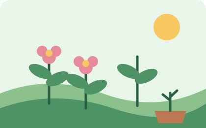
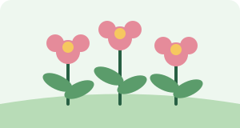
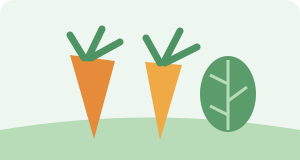

Relaxing
Spending time with plants helps me slow down and feel calm.
A hobby that helps me grow
Gardening is a relaxing hobby. I enjoy caring for plants, watching them grow and making outdoor spaces greener.
Explore my plants
Spending time with plants helps me slow down and feel calm.
I learn how plants grow and what they need to stay healthy.
Growing herbs and vegetables can provide fresh ingredients.

Flowers add colour and attract pollinators.

Vegetables are rewarding to grow and harvest.
Small steps can make it easier to care for a garden.